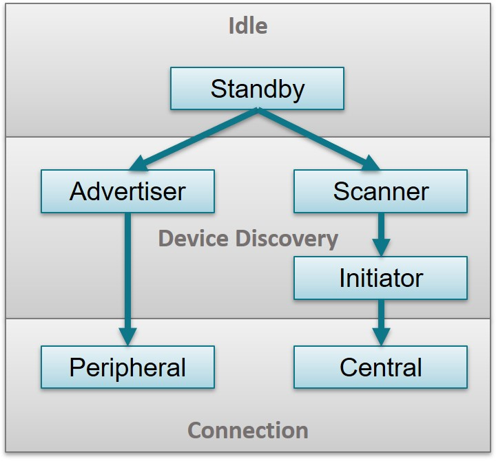
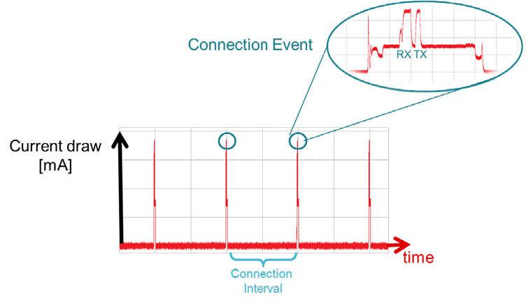
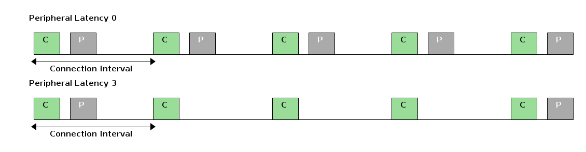

Generic Access Profile (GAP)¶
The GAP layer is responsible for connection functionality. This layer handles the access modes and procedures of the device including device discovery, link establishment, link termination, initiation of security features, and device configuration. See GAP State Diagram. for more details.

Fig. 6 GAP State Diagram.
Based on the role for which the device is configured, GAP State Diagram. shows the states of the device. The following describes these states.
- Standby: The device is in the initial idle state upon reset.
- Advertiser: The device is advertising with specific data letting any initiating devices know that it is a connectable device (this advertisement contains the device address and can contain some additional data such as the device name).
- Scanner: When receiving the advertisement, the scanning device sends a scan request to the advertiser. The advertiser responds with a scan response. This process is called device discovery. The scanning device is aware of the advertising device and can initiate a connection with it.
- Initiator: When initiating, the initiator must specify a peer device address to which to connect. If an advertisement is received matching that address of the peer device, the initiating device then sends out a request to establish a connection (link) with the advertising device with the connection parameters described in connection_parameters.
- Peripheral/Central: When a connection is formed, the device functions as a Peripheral if it is the advertiser and a Central if it is the initiator.
Bluetooth devices operate in one or more GAP roles based on the application use case. The GAP roles utilize one or more of the GAP states. Based on this configuration, many Bluetooth Low Energy protocol stack events are handled directly by the main application task and sometimes routed from the GAP Bond Manager. The application can register with the stack to be notified of certain events.
GAP Roles¶
Based on the configuration of the device, the GAP layer always operates in one of four (4) roles as defined by the specification:
- Broadcaster - The device is an advertiser that is non connectable.
- Observer - The device scans for advertisements but cannot initiate connections.
- Peripheral - The device is an advertiser that is connectable and operates as Peripheral in a single link-layer connection.
- Central - The device scans for advertisements and initiates connections and operates as a Central in a single or multiple link-layer connections.
The Bluetooth Core Specifications allows for certain combinations of multiple roles
GAP Advertiser¶
The following list describes how to configure the GAP for advertising. The network terminal example project will be used as an example.
Configure Advertisement instance with ble_gap_ext_adv_configure()
int ble_gap_ext_adv_configure(uint8_t instance, const struct ble_gap_ext_adv_params *params, int8_t *selected_tx_power, ble_gap_event_fn *cb, void *cb_arg);The function takes the advertisement parameters which need to be filled out from the following struct
Listing 1 nimble_host.c::nimble_host_ext_adv_cfg() - Network Terminal advertising default parameters¶struct ble_gap_ext_adv_params params; params.legacy_pdu = 1; if (params.legacy_pdu) { params.connectable = 1; params.scannable = 1; params.include_tx_power = 0; } else { params.connectable = 1; params.scannable = 0; params.include_tx_power = 0; } params.directed = 0; params.high_duty_directed = 0; params.anonymous = 0; params.scan_req_notif = 0; if (params.directed && params.legacy_pdu) { params.scannable = 0; } /* Other adv parameters */ params.itvl_min = 100; params.itvl_max = 100; params.channel_map = 0x7; params.peer.type = BLE_OWN_ADDR_PUBLIC; os_memset(params.peer.val,0x00,BLE_DEV_ADDR_LEN); params.own_addr_type = own_addr_type; params.filter_policy = 0x0; params.tx_power = 127; params.primary_phy = 1; params.secondary_phy = 1; params.sid = 0;
- Set Advertisers virtual address
The application can set a predefined public address or choose to generate a random address to advertise (for added security).
/* Set adv Address */ if (own_addr_type == BLE_OWN_ADDR_PUBLIC) { rc = ble_hs_id_copy_addr(BLE_ADDR_PUBLIC, addr.val, NULL); if ( rc != 0 ) { console_printf("\n\rERROR: fail to retrieves one of the device's identity addresses, with error code: %d\n\r",rc); return (rc); } } else { rc = ble_hs_id_gen_rnd(1, &addr); if ( rc != 0 ) { console_printf("\n\rERROR: fail to generates a new random address, with error code: %d\n\r",rc); return (rc); } /* Set random address for advertising instance */ rc = ble_gap_ext_adv_set_addr(pAdvCfg->instance, &addr); if ( rc != 0 ) { console_printf("\n\rERROR: fail to set random address for configured advertising instance, with error code: %d\n\r",rc); return (rc); } }
- Load Advertisement and Scan Response data
Advertising and scan response data is decoupled from the advertising set. That is, it is possible for multiple advertising instances to use the same memory for advertising/scan response data. An advertising set could also use the same memory for its advertising and scan response data. (Note that this requires diligence as there are some data types that are only allowed once in the advertisement and scan response data.)
Advertisement data is set with ble_gap_ext_adv_set_data()
int ble_gap_ext_adv_set_data(uint8_t instance, struct os_mbuf *data);
The function needs the instance of the adv set this data will populate as well as the data.
Using the function ble_hs_adv_set_fields_mbuf() you can get a buffer of data from setting the ble_hs_adv_fields struct.
struct ble_hs_adv_fields adv_fields; struct os_mbuf *adv_data; /* Set ADV fields */ memset(&adv_fields, 0, sizeof(adv_fields)); /* General Discoverable and BrEdrNotSupported */ adv_fields.flags = BLE_HS_ADV_F_DISC_GEN | BLE_HS_ADV_F_BREDR_UNSUP; adv_fields.tx_pwr_lvl_is_present = 0; adv_fields.tx_pwr_lvl = BLE_HS_ADV_TX_PWR_LVL_AUTO; /* Set device name as instance name */ adv_fields.name = (uint8_t *) device_name; adv_fields.name_len = strlen(device_name); adv_fields.name_is_complete = 1; /* Manufacturer specific data */ adv_fields.mfg_data = (uint8_t*)mgf_data; adv_fields.mfg_data_len = BLE_MGF_DATA_LEN; /* Get Packet Header */ /* Default to legacy PDUs size, mbuf chain will be increased if needed */ adv_data = os_msys_get_pkthdr(BLE_HCI_MAX_ADV_DATA_LEN, 0); if ( adv_data == NULL ) { console_printf("\n\rERROR: failed to allocate memory for adv data\n\r"); return (-1); } /* Set ADV fields */ rc = ble_hs_adv_set_fields_mbuf(&adv_fields, adv_data); if ( rc != 0 ) { console_printf("\n\rERROR: failed to set adv set fields, with error code: %d\n\r", rc); os_mbuf_free_chain(adv_data); return (rc); } /* Set ADV Data */ rc = ble_gap_ext_adv_set_data(pAdvCfg->instance, adv_data);
Note
There are more fields that can be set for advertisement data such as service UUIDs, however, this is what is used in the network terminal example
- Enable / Disable advertising.
Calling ble_gap_ext_adv_start will start advertising.
int ble_gap_ext_adv_start(uint8_t instance, int duration, int max_events);
The above steps can be repeated to create multiple advertising sets. There is an upper limit of six advertising sets (defined in the controller). The heap may also restrict the number of advertising sets you can create in one application.
Changing advertising parameters
In order to change an individual parameter after advertising has been enabled, advertising must first be disabled. Re-enable advertising after the parameter is modified.
GAP Scanner¶
The GAP Scanner performs Extended Scanning and Legacy Scanning.
Set scan parameters. First we must set the set the ble_gap_ext_disc_params struct for each PHY
Note
Make sure the scanning window is at least twice the length of the expected advertising interval to ensure at least 1 advertising event is captured in each scanning window. Otherwise, the scanning device may not find the advertising device.
struct ble_gap_ext_disc_params uncoded_params; uncoded_params.itvl = BLE_GAP_SCAN_ITVL_MS(100); uncoded_params.window = BLE_GAP_SCAN_ITVL_MS(50); uncoded_params.passive = 1;
Start scanning The function ble_gap_ext_disc() will initiate the discovery procedures
Note
Remember to reset scan results every time you start scanning.
int ble_gap_ext_disc(uint8_t own_addr_type, uint16_t duration, uint16_t period, uint8_t filter_duplicates, uint8_t filter_policy, uint8_t limited, const struct ble_gap_ext_disc_params *uncoded_params, const struct ble_gap_ext_disc_params *coded_params, ble_gap_event_fn *cb, void *cb_arg);You will need to also choose the duration, period, filter_duplicate, filter policy
ble_gap_ext_disc(own_addr_type, 300, 1, 1, 0, 0, pUncodedParams, pCodedParams, gap_event_cb, NULL);
#. Advertisement Reports Note that during scanning, individual advertisements and scan responses are returned as BLE_GAP_EVENT_EXT_DISC in the GAP callback function. By default, duplicate reports are filtered such that only one event is returned to the application per peer device address.
The maximum amount of scan responses that can be discovered during one scan can be set with the BLE_MAX_SCAN_RESULTS
Obtain Advertising Fields from Advertising Report
The application can extract the advertising fields from the advertising report received in the callback function gap_event_cb
case BLE_GAP_EVENT_EXT_DISC: if (extScanCB.extScanResultsCount < BLE_MAX_SCAN_RESULTS) { rc = ble_hs_adv_parse_fields(&adv_fields, event->ext_disc.data, event->ext_disc.length_data); if( rc != 0 ) { console_printf("ERROR: failed to parse adv fields with error code: %d\n\r",rc); return rc; } // Store partial adv report data os_memcpy(&extScanCB.extScanResults[extScanCB.extScanResultsCount].addr,&event->ext_disc.addr,sizeof(ble_addr_t)); extScanCB.extScanResults[extScanCB.extScanResultsCount].prim_phy = event->ext_disc.prim_phy; extScanCB.extScanResults[extScanCB.extScanResultsCount].rssi = event->ext_disc.rssi; os_memcpy(extScanCB.extScanResults[extScanCB.extScanResultsCount].local_name,no_local_name,7); if (adv_fields.name != NULL) { if (adv_fields.name_len < (BLE_DEVICE_LOCAL_NAME_LEN-1)) { os_memcpy(extScanCB.extScanResults[extScanCB.extScanResultsCount].local_name, adv_fields.name, adv_fields.name_len); extScanCB.extScanResults[extScanCB.extScanResultsCount].local_name[adv_fields.name_len] = '\0'; } } extScanCB.extScanResultsCount++; } extScanCB.extScanResultsTotal++; break;
Filtering
The GAP Scanner module provides 5 different types of filter to reduce the amount of advertising report notifications to the application and eventually save memory and power consumption. The result of the filtering affects both advertising reports and advertising report recording. The packets filtered out by the filter configurations are discarded and will neither be reported nor recorded.
* Scanning filter policy * NO_WL: * Scanner processes all advertising packets (white list not used) except * directed, connectable advertising packets not sent to the scanner. * USE_WL: * Scanner processes advertisements from white list only. A connectable, * directed advertisment is ignored unless it contains scanners address. * NO_WL_INITA: * Scanner process all advertising packets (white list not used). A * connectable, directed advertisement shall not be ignored if the InitA * is a resolvable private address. * USE_WL_INITA: * Scanner process advertisements from white list only. A connectable, * directed advertisement shall not be ignored if the InitA is a * resolvable private address. #define BLE_HCI_SCAN_FILT_NO_WL (0) #define BLE_HCI_SCAN_FILT_USE_WL (1) #define BLE_HCI_SCAN_FILT_NO_WL_INITA (2) #define BLE_HCI_SCAN_FILT_USE_WL_INITA (3) #define BLE_HCI_SCAN_FILT_MAX (3)
GAP Initiator¶
The initiator module is used to initiate the connection to a peripheral device. An initiator generally scans for advertisements then connects to a specific device. The initiator is a short lived state that transitions to the Central Role after a connection is established.
To begin a connection the following function must be called
int ble_gap_ext_connect(uint8_t own_addr_type, const ble_addr_t *peer_addr, int32_t duration_ms, uint8_t phy_mask, const struct ble_gap_conn_params *phy_1m_conn_params, const struct ble_gap_conn_params *phy_2m_conn_params, const struct ble_gap_conn_params *phy_coded_conn_params, ble_gap_event_fn *cb, void *cb_arg);
Connection Parameters
This section describes the connection parameters which are sent by the initiating device with the connection request
- Connection Interval - In Bluetooth Low Energy connections, a
frequency-hopping scheme is used. The two devices each send and
receive data from one another only on a specific channel at a
specific time. These devices meet a specific amount of time later
at a new channel (the link layer of the Bluetooth Low Energy
protocol stack handles the channel switching). This meeting
where the two devices send and receive data is known as a
connection event. If there is no application data to be sent or received, the two devices exchange link layer data with empty application payload to maintain the connection. The connection interval is the amount of time between two connection events in units of 1.25 ms. The connection interval can range from a minimum value of 6 (7.5 ms) to a maximum of 3200 (4.0 s). See Connection Event and Interval for more details.

Fig. 7 Connection Event and Interval
- Peripheral Latency - Formerly known as ‘Slave Latency’. This parameter gives the Peripheral device the option of skipping a number of connection events. This ability gives the peripheral device some flexibility. If the peripheral does not have any data to send, it can skip connection events, stay asleep, and save power. The peripheral device selects whether to wake or not on a per connection event basis. The peripheral can skip connection events but must not skip more than allowed by the Peripheral latency parameter or the connection fails. See picture below for more details.

- Supervision Time-out - This time-out is the maximum amount of time between two successful connection events. If this time passes without a successful connection event, the device terminates the connection and returns to an unconnected state. This parameter value is represented in units of 10 ms. The supervision time-out value can range from a minimum of 10 (100 ms) to 3200 (32.0 s). The time-out must be larger than the effective connection interval (see effective_connection_interval for more details).
Effective Connection Interval
The effective connection interval is equal to the amount of time between two connection events, assuming that the Peripheral skips the maximum number of possible events if Peripheral latency is allowed (the effective connection interval is equal to the actual connection interval if Peripheral latency is set to 0).
The Peripheral Latency value represents the maximum number of events that can be skipped. This number can range from a minimum value of 0 (meaning that no connection events can be skipped) to a maximum of 499. The maximum value must not make the effective connection interval (see the following formula) greater than 16 s. The interval can be calculated using the following formula:
Effective Connection Interval = (Connection Interval) * (1 + [Peripheral Latency])
Consider the following example:
- Connection Interval: 80 (100 ms)
- Peripheral Latency: 4
- Effective Connection Interval: (100 ms) * (1 + 4) = 500 ms
When no data is being sent from the Peripheral to the Central, the Peripheral transmits during a connection event once every 500 ms.
Connection Parameter Considerations
In many applications, the Peripheral skips the maximum number of connection events. Consider the effective connection interval when selecting or requesting connection parameters. Selecting the correct group of connection parameters plays an important role in power optimization of the Bluetooth Low Energy device. The following list gives a general summary of the trade-offs in connection parameter settings.
Reducing the connection interval does as follows:
- Increases the power consumption for both devices
- Increases the throughput in both directions
- Reduces the time for sending data in either direction
Increasing the connection interval does as follows:
- Reduces the power consumption for both devices
- Reduces the throughput in both directions
- Increases the time for sending data in either direction
Reducing the Peripheral latency (or setting it to zero) does as follows:
- Increases the power consumption for the peripheral device
- Reduces the time for the peripheral device to receive the data sent from a central device
Increasing the Peripheral latency does as follows:
- Reduces power consumption for the peripheral during periods when the peripheral has no data to send to the central device
- Increases the time for the peripheral device to receive the data sent from the central device
Connection Parameter Update
In some cases, the central device requests a connection with a peripheral device containing connection parameters that are unfavorable to the peripheral device. In other cases, a peripheral device might have the desire to change connection parameters in the middle of a connection, based on the peripheral application.
This can be done with ble_gap_update_params()
int ble_gap_update_params(uint16_t conn_handle, const struct ble_gap_upd_params *params);
The le_gap_upd_params contains six parameters:
struct ble_gap_upd_params {
/** Minimum value for connection interval in 1.25ms units */
uint16_t itvl_min;
/** Maximum value for connection interval in 1.25ms units */
uint16_t itvl_max;
/** Connection latency */
uint16_t latency;
/** Supervision timeout in 10ms units */
uint16_t supervision_timeout;
/** Minimum length of connection event in 0.625ms units */
uint16_t min_ce_len;
/** Maximum length of connection event in 0.625ms units */
uint16_t max_ce_len;
};
Sending a Connection Parameter Update Request is optional and it is not required for the central device to accept or apply the requested parameters. Some applications try to establish a connection at a faster connection interval to allow for a faster service discovery and initial setup. These applications later request a longer (slower) connection interval for optimal power usage.
Connection Event Callback
eventType Description BLE_GAP_EVENT_CONNECT This event is returned when connection is established. When this returns, the eventCount will be 0. BLE_GAP_EVENT_CONN_UPDATE This event is returned when connection parameters are updated BLE_GAP_EVENT_DISCONNECT This event occurs on disconnections from either side
Connection Termination
Either the Central or the Peripheral can terminate a connection for any reason. One side initiates termination and the other side must respond before both devices exit the connected state.
To disconnect call ble_gap_terminate
int ble_gap_terminate(uint16_t conn_handle, uint8_t hci_reason);